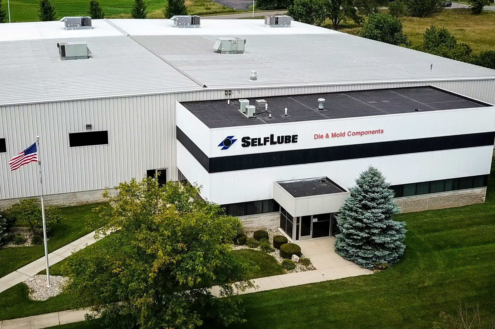

SelfLube
Data Analytics Intern
- Used the PANDAS library within the Python programming language to complete various data analysis projects which influenced production decisions for over 30 different part families and saved the company money.
- Developed an algorithm in Python that sorted through 1,000's of cells of production data in Microsoft Excel and outputted categorical averages to a text file.
- Learned how to graphically represent data in Microsoft Excel which made key information easier to interpret.
The Shumaker Technology Group
Web Development Intern
- Worked with a variety of front-end and back-end programming languages to design, develop, and deploy fully functional and aesthetic websites for a variety of clients ranging from small businesses to Government agencies.
- Maintained websites and provided technical support directly to 100's of clients through a ticketing system called OneDesk.